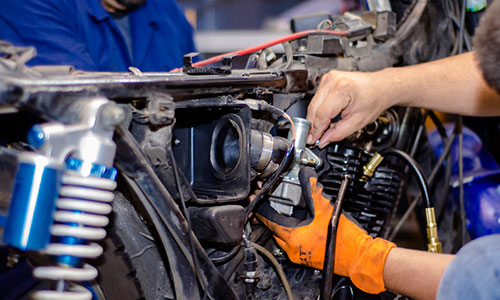
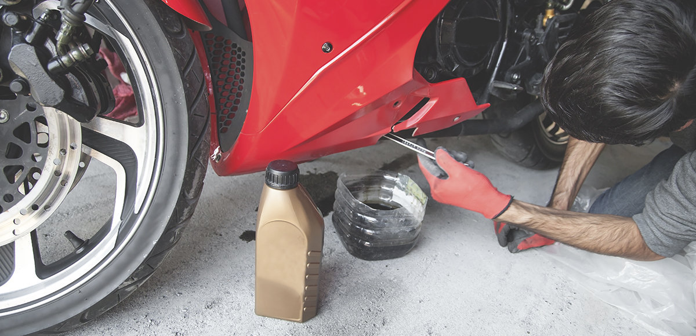
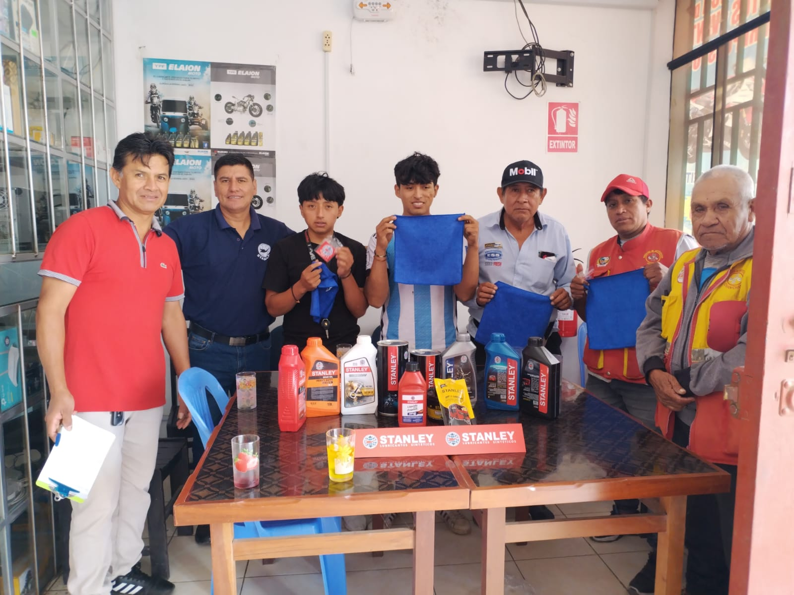
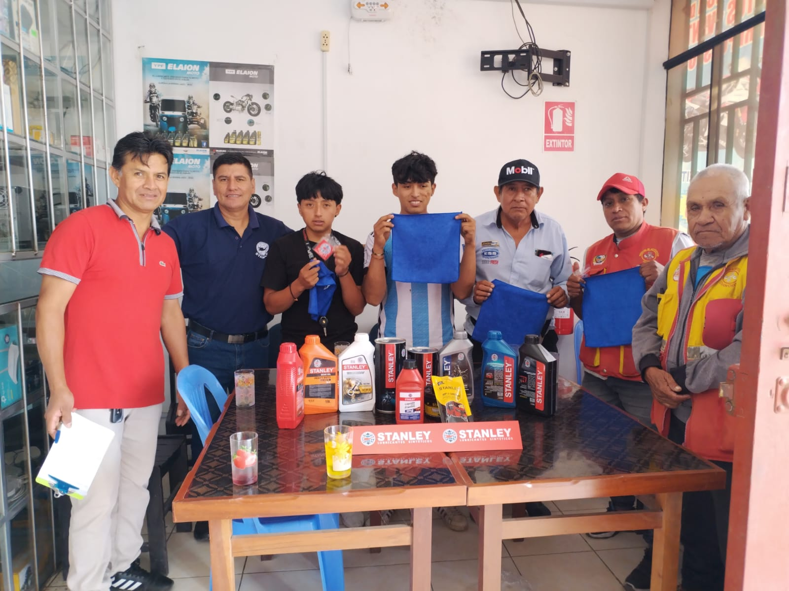

Servicios
🏍️ Revisión de frenos para motos
Chequeo completo del sistema de frenos de tu moto para garantizar tu seguridad en cada viaje.
- Inspección de pastillas y Zapatas.
- Verificación del líquido de frenos.
- Detección de posibles fugas o fallas en el sistema.
Realizado por técnicos especializados con experiencia en motocicletas de todas las marcas y modelos.

🛠️ Reparación Mecánica de Motos
Solucionamos fallas con precisión, usando repuestos originales y técnicos certificados.
- Diagnóstico computarizado de motor
- Reparación de sistemas eléctricos y de arranque
- Sustitución de piezas dañadas
- Pruebas de funcionamiento y garantía

💧 Cambio de Aceite para Motos
Realizamos cambios de aceite según especificaciones del fabricante, asegurando el máximo rendimiento del motor.
- Aceites sintéticos y semisintéticos certificados
- Revisión y cambio de filtro de aceite
- Lubricación de puntos clave
- Asesoría según tipo de moto y kilometraje

 
